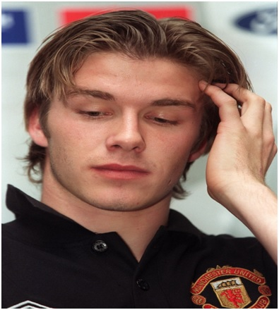
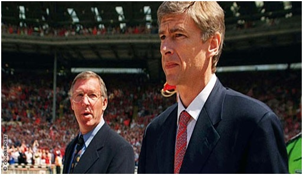

Chương 29

ếu có một điều Alex Ferguson luôn không hài lòng tại Old Trafford, đó là lương bổng. Ông cảm thấy mình không được trả công đúng mức. Lương Fergie thấp hơn Cantona, và chỉ bằng một nửa lương của George Graham, HLV trưởng Arsenal. Thế là sao? – Ferguson tự hỏi – Chẳng lẽ những gì mình đã làm cho United không sánh bằng công trạng của George Graham ở Highbury? Tưởng như với cú đúp năm 1996, ông sẽ chiếm thế thượng phong trong cuộc đàm phán hợp đồng với BLĐ United. Nhưng không, BLĐ nắm được “thóp” của Fergie. Họ biết ông đã quá gắn bó với Manchester, biết CLB đã trở thành một phần máu thịt ông. Họ tin chắc: Một khi đã đổ mồ hôi sôi nước mắt gầy dựng nên cả một thế hệ vàng, ông sẽ không thể bỏ tất cả mà ra đi. Ferguson cuối cùng phải thỏa hiệp, đồng ý bản hợp đồng mới bốn năm, lương 650000 bảng đồng niên. Cùng khoảng ấy, Steve Bruce rời Old Trafford đến với Birmingham City. Birmingham chỉ là CLB Hạng Nhất, mà sẵn sàng trả cho trung vệ 36 tuổi này một triệu bảng một năm, gần gấp đôi lương ông thầy cũ!
Chia tay Steve Bruce, Ferguson đón về hàng loạt cầu thủ mới: Jordi Cruyff, Karel Poborsky, Ronnie Johnsen, Raimond van der Gouw, và Ole Gunnar Solskjaer[1]. Thế nhưng, ngày khai mạc mùa 1996-1997, gặp Wimbledon, người thắp sáng cầu trường lại là một cầu thủ “cây nhà lá vườn”: David Beckham. Nhận bóng từ phần sân nhà, tiền vệ 21 tuổi quyết định dứt điểm thẳng về khung thành đối phương. Quả bóng vẽ một đường cầu vồng lả lướt trên nền trời, vượt qua đầu thủ môn Neil Sullivan đã lỡ dâng cao, rồi chui tọt vào lưới trong sự ngỡ ngàng của tất cả mọi người có mặt trên sân.
Bàn thắng tuyệt vời được chiếu đi chiếu lại trên truyền hình, và các bình luận viên dùng tất cả những lời có cánh ngợi khen nó. Chỉ qua một đêm, từ chỗ bị xem là người kém nhất trong Thế Hệ Vàng, Beckham vụt sáng trở thành minh tinh. Ít lâu sau, nhờ mối tình với ca sỹ Victoria Adams của nhóm Spice Girls đang rực sáng toàn cầu, tên tuổi anh càng chói lọi. Thế là gần 30 năm sau George Best, một thần tượng mới ra đời, làm đảo điên giới trẻ Anh Quốc và thế giới. Trẻ trung đang lên, đá bóng xuất sắc, đẹp trai ngất ngây, lại cặp với một cô bồ lừng lẫy, ở Beckham thật tình chẳng còn thiếu thứ gì[2].
Vẫn như năm ngoái, đường đến chức vô địch ngoại hạng chứng kiến cuộc đua tài giữa United và Newcastle, đội vừa phá kỷ lục chuyển nhượng thế giới khi bỏ ra 15 triệu bảng mua tiền đạo Alan Shearer. Một lần nữa, CLB giành chiến thắng là Quỷ Đỏ, dù dọc đường có vài lần vấp váp, như khi thua hai trận vỡ mặt trước Newcastle (0-5) và Southampton (3-6). Cầu thủ nổi bật nhất mùa không ai khác hơn Beckham. Anh ghi tổng cộng 12 bàn thắng, đa phần từ những cú đá phạt thần sầu, ẵm gọn danh hiệu Cầu Thủ Trẻ Xuất Sắc Nhất Nước Anh.

David Beckham (Ảnh: Whoateallthepies.tv)
Cũng gây ấn tượng sâu đậm với người hâm mộ là tân binh Solskjaer. Đến Old Trafford khi mới 22 tuổi, khuôn mặt trông búng ra sữa, nhưng khả năng chớp thời cơ của tiền đạo người Na Uy đã đạt mức “lư hỏa thuần thanh”. Trong mùa đầu khoác màu áo đỏ, Solskjaer chiếm suất đá chính bên cạnh Cantona, ghi 19 bàn tại các giải, dẫn đầu danh sách phá lưới của CLB. Những mùa sau, anh phải lùi về dự bị, song luôn có duyên lập công mỗi lần ra sân, được người hâm mộ hết sức yêu mến, tặng cho biệt danh “sát thủ mặt trẻ thơ”.
Không những VĐQG với bảy điểm nhiều hơn Newcastle, United còn thi đấu thành công trên đấu trường châu Âu. Dưới thời Sir Matt Busby, Man đỏ 5 lần đá Cúp C1: Một lần vô địch, bốn lần vào bán kết. Dưới quyền Ferguson, đội dự cúp hai lần đều bị rớt đài từ sớm. Lần thứ ba này, tình hình có khá hơn. CLB vượt qua vòng đầu, trong bảng đấu gồm Fenerbahce, Rapid Vienna và Juventus; sau đó thắng Porto chung cuộc 4-0 tại tứ kết, trước khi dừng bước trước Borussia Dortmund, đội cuối cùng lên ngôi vương.
Một trong những nguyên nhân khiến United thua Dortmund là phong độ dưới trung bình của Cantona. “Nhà Vua” xoay trở chậm chạp, bỏ lỡ nhiều cơ hội trông thấy. Ngay khi đối thủ ghi bàn, anh vẫn thờ ơ, chẳng có vẻ gì khẩn trương. Mà không chỉ trận gặp Dortmund, suốt cả mùa giải, tuy vẫn giữ vai trò không thể thiếu trên hàng công, Cantona dường như đã mất lửa. Anh chểnh mảng cả việc tập thể hình, khiến cơ thể có phần béo ra. “Có chuyện gì không?”, Ferguson từng quan ngại hỏi. Cantona chỉ lắc đầu.
Nhưng rõ ràng “có sao”, bởi Cantona tuyên bố giải nghệ vào cuối mùa. Hiểu tính học trò, biết không gì lay chuyển nổi ý định của anh, Ferguson đành chấp nhận. Tin Cantona treo giày làm CĐV toàn cầu sửng sốt. Những ngày sau đó, fan hâm mộ Quỷ Đỏ biến khu đất trống gần sân Old Trafford thành một “đền tưởng niệm” nguyên thủ quân. Họ chất đống ở đấy những tấm poster hình Cantona, và cờ, và hoa, và những chiếc áo số 7. Chẳng ai chết cả, Cantona vẫn khỏe mạnh bình thường, nhưng trong lòng các fan, có một nhà vua đã qua đời!
Tại sao Cantona chia tay bóng đá khi chưa đầy 31 tuổi, đang trên đỉnh cao sự nghiệp? Theo lời chính anh, đó là vì bóng đá ngày càng thương mại hóa, vì bộ phận kinh tài của Manchester United cứ xem anh như con cờ để kiếm tiền, làm anh không còn hứng thú chơi bóng nữa. “Tôi nghỉ vì tôi không còn cảm xúc”, Cantona chia sẻ, “Một khi không có cảm xúc, không có niềm vui trong một việc gì, thì còn làm việc ấy mà chi. Tốt nhất là ngừng lại. Một khi kinh doanh trở nên quan trọng hơn bóng đá thì thôi, tôi không quan tâm đến bóng đá nữa”.
Vâng, Cantona về bản chất là một nghệ sỹ. Chơi bóng vì niềm vui và cảm hứng hơn vì tiền, nên khi cảm thấy niềm vui của mình bị tiền tài làm vấy bẩn, anh liền rời cuộc chơi. Nhà tài tử là thế: Hứng lên thì làm, không hứng thì thôi, sự nghiệp hay danh vọng, chẳng có gì quá quan trọng đến độ phải nuối tiếc, không thể dứt áo.
Cantona ra đi, cũng vì sau án treo giò, anh không được là chính mình. Thật vậy, nếu để ý sẽ thấy, từ khi tái xuất, tiền đạo người Pháp trở nên điềm đạm, “ôn nhu”, không hung hăng, gây sự như trước, thẻ vàng cũng chẳng dính, đừng nói đến thẻ đỏ. Đó là vì anh ý thức được lỗi lầm, nên tự kiềm chế, không để mắc phải lần thứ hai. Việc Cantona tự kiềm chế cố nhiên tốt cho đội bóng, nhưng về lâu về dài, bản thân anh cảm thấy ngột ngạt, chán ngán.
“Nếu tôi không giải nghệ, trong tương lai chắc lại lĩnh thẻ thôi”, vẫn lời Cantona, “Suốt một năm rưỡi trời, không bị phạt là do tôi cố gắng, chứ bản chất tôi vẫn thế, có gì thay đổi đâu. Chín tháng bị cấm, tôi tự nhủ lòng mình: Bây giờ mày trở lại, chúng nó biết mày nóng, sẽ lại khiêu khích, nên bằng mọi cách mày phải tự chủ. Nhưng muốn tự chủ thì phải tránh, không được để cảm xúc chi phối, mà thiếu cảm xúc thì lối chơi không còn lửa, như tôi đã chơi trong mùa cuối sự nghiệp.”
Dù lửa mất đi, tình cảm Cantona giành cho United vẫn vẹn nguyên. “Thật khó mà giải thích quan hệ giữa tôi và CLB”, anh tâm sự, “Tôi cũng chẳng muốn giải thích làm gì. Nó như một tình yêu. Khi yêu, ta biết mình đang yêu, chứ đâu cần biết tại sao, đâu cần giải thích yêu như thế nào, đúng không? Muốn tôi nói về mình và United thì nói đến sáu tháng cũng chưa hết. Đừng nói gì thì hơn”.
Giới bình luận ngã ngửa khi Teddy Sheringham được đưa về từ Tottenham để thế cho Cantona: Sheringham là cầu thủ đẳng cấp thật, nhưng đã 31 tuổi, có vẻ bắt đầu hết thời, mua anh ta để làm gì? Họ không ngờ rằng chỉ khi đến với Old Trafford, sự nghiệp của Sheringham mới thật sự bắt đầu. Bất chấp phong độ chói sáng của Solskjaer trong mùa trước, Ferguson đặt niềm tin vào cặpSheringham-Cole. Tuy ngoài đời, Sheringham và Cole chẳng ưa gì nhau; trên sân cỏ, họ vẫn phối hợp tương đối tốt.
Dù vậy, Sheringham vẫn không phải Cantona, một mình anh chẳng thể lấp đầy khoảng trống quá lớn do Cantona để lại. Không may hơn nữa, mới đầu giải 1997-1998, Roy Keane, tân thủ quân United, đã chấn thương nặng khi truy cản Alfie Haaland của Leeds, phải nghỉ đến hết mùa. Cũng vì chấn thương, “phù thủy xứ Wales” Ryan Giggs ngồi ngoài một thời gian dài. Việc thiếu vắng trụ cột gây nhiều khó khăn cho Quỷ Đỏ trong việc cạnh tranh chức vô địch.
Mùa 97-98 đánh dấu việc Arsenal vượt qua Newcastle, trở thành đối trọng của Manchester United. Arsene Wenger, HLV mới người Pháp của Arsenal, đem đến cho Highbury một luồng gió đầy sức thanh tân. Trong vòng sáu năm 1998-2004, giải ngoại hạng sẽ là cuộc đua song mã giữa Arsenal và United. Trên băng ghế huấn luyện, đó là cuộc đấu trí giữa Alex Ferguson và Arsene Wenger.
Có người lý luận: Wenger không cạnh tranh nổi với Ferguson về mặt danh hiệu, không phải do ông kém tài, mà vì đội hình Arsenal không mạnh bằng đội hình United. Điều đó chỉ đúng từ giữa thập niên 2000 trở đi. Hãy thử nhìn vào lực lượng Arsenal mùa 97-98: Họ sở hữu một hàng phòng thủ huyền thoại bao gồm thủ thành David Seaman và cặp tứ vệ Dixon, Winterburn, Bould, Adams; trên tuyến tiền vệ có Overmars, Petit, Vieira, Platt; tuyến tiền đạo cũng mạnh không kém, với Bergkamp, Wright, và tài năng trẻ Anelka. Rõ ràng lực lượng này là ngang ngửa, nếu không muốn nói là mạnh hơn lực lượng của Quỷ Đỏ. Overmars và Vieira có thể sánh ngang Giggs và Keane; Bould và Adams không thua Pallister – Johnsen, còn độ tinh tế của Dennis Bergkamp vượt trên bất kỳ tiền đạo United nào.
Bởi thế, không mấy ngạc nhiên khi Arsenal vượt qua United trong cả hai lượt trận: Lượt đi 3-2, lượt về 1-0. Trong trận lượt về, Peter Schmeichel lên tham gia tấn công vào những phút cuối cùng, nhưng không thành công. Lúc bóng văng ra đến chân Bergkamp, Schmeichel phải rượt theo, rướn người hết cỡ để truy cản tiền đạo người Hà Lan. Pha truy cản thành công, với cái giá là Schmeichel rách gân khoeo! Đã mất Cantona, vắng Keane và Giggs, nay lại thêm Schmeichel, United như mất định hướng trong phần còn lại của mùa giải. Họ về đích thứ hai tại giải Ngoại Hạng, thua Arsenal của Wenger một điểm, và bị Monaco tống tiễn ở tứ kết Cúp C1.
Arsene Wenger là hình mẫu đối lập với Alex Ferguson. Trong khi Ferguson giao du rộng rãi, rất biết tận hưởng cuộc sống ngoài công việc, ham mê đua ngựa, cá cược, thích ẩm thực, rượu vang, về già còn học thêm Pháp ngữ và dương cầm; Wenger ít quan tâm gì khác ngoài bóng đá. Không thích giao thiệp, ít ra ngoài, nên khi đã ở London nhiều năm, ông vẫn không thuộc đường đi nước bước trong trung tâm thành phố. Huấn luyện xong một ngày mệt mỏi, Wenger về đến nhà, xem đá banh trên truyền hình, chỉ lấy đó làm vui.
Khuôn mặt khắc khổ, nghiêm nghị, Wenger có biệt danh “Giáo Sư”. Phong cách huấn luyện, quản lý của ông rất tỉ mỉ, khoa học. Sau khi dẫn dắt Arsenal soán ngôi United, HLV người Pháp được tán tụng lên tận mây xanh. Trong giới chuyên môn, xuất hiện những ý kiến cho rằng vai trò lịch sử của Alex Ferguson đã kết thúc. Fergie là đặc trưng cho những gì cổ hủ, lạc hậu, lỗi thời; ngày nay muốn thành công, không thể chỉ hùng hổ dọa nạt cầu thủ, “cả vú lấp miệng em” mà được. United, do đó, chỉ còn là quá khứ, tương lai thuộc về Wenger và Arsenal.
Những người nêu lên ý ấy không hiểu rằng: Dẫu thời thế đổi thay, thương hải tang điền, có những giá trị vẫn vĩnh hằng, bất biến. Họ cũng không ngờ được những gì sẽ xảy ra trong mùa bóng tiếp theo.

Alex Ferguson và Arsene Wenger (Ảnh: Arsenal.com)
Chú thích:
[1] Các cầu thủ này đến từ Na Uy, Hà Lan và CH Czech. Lúc này, luật hạn chế cầu thủ nước ngoài của UEFA đã được dỡ bỏ, nên Ferguson khá tự do mua sắm.
[2] Về Beckham, xin xem thêm Nguyễn Minh (2013), Sao Của Ngàn Sao – Cuộc Đời Và Sự Nghiệp David Beckham.